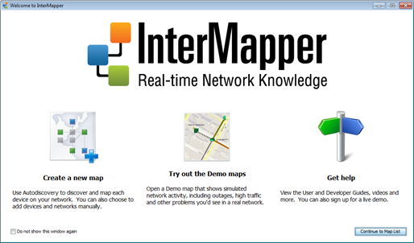
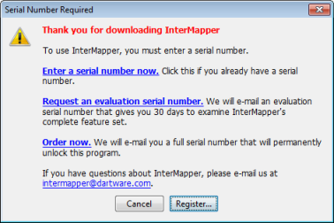

Get a copy of InterMapper from the Download Page, then install it as described below.
When you install InterMapper, the installer also includes InterMapper DataCenter{} and InterMapper Flows{}. During the trial period, all three are available. Once the trial license expires, you need a license to run InterMapper Flows, and the correct InterMapper license to run InterMapper DataCenter.
When you launch InterMapper the first time, a Welcome page appears. Use the shortcuts on the Welcome page to get you quickly to area of InterMapper that will best get you started.
InterMapper Welcome page
To prevent the Welcome window from appearing:
No matter which platform you're using, a set of demo maps becomes available when installation is complete and the program is launched. Watch them operate, and experiment with them to see how InterMapper operates. For additional information, see With Try Out the Demo Maps.
Note: although many of the features described in this manual are similar between the MacOS, Windows, and Unix/Linux platforms, there are a few differences. We recommend you read the Readme file on the Downloads page for information specific to your version.

The downloadable version of InterMapper requires a serial number to operate. You can request a free evaluation serial number to get the full functionality for 30 days, including printing and opening saved maps.
If you already have a serial number (because you purchased the software or you received the evaluation serial number), click Enter your serial number now or the Register button in the Serial Number Required window. You can then enter your name and serial number. For details about entering your evaluation (or any other) serial number, you can read the Registering your software page.
If you don't have a serial number, click the Request an Evaluation Serial Number link in the window shown above. It will open a web form through which you can request a serial number. We will e-mail you a serial number that allows you to use InterMapper to monitor a limited number of devices for 30 days. When you receive the serial number, enter it as described above.
Once you've seen the demo, see Using InterMapper to guide you as you try out InterMapper's features.
When you purchase InterMapper, we will send you a full serial number that unlocks the software permanently.
InterMapper supports a number of different serial number formats. A full serial number - sent to those who purchase the software - will never time out. Once entered, that version of the application will run forever.
InterMapper also supports evaluation serial numbers which allow you to run InterMapper for a certain number of days before it ceases to operate. This gives you an opportunity to try the program without obligation. When a serial number times out, InterMapper simply ceases to operate. It never deletes or alters files on your hard drive.